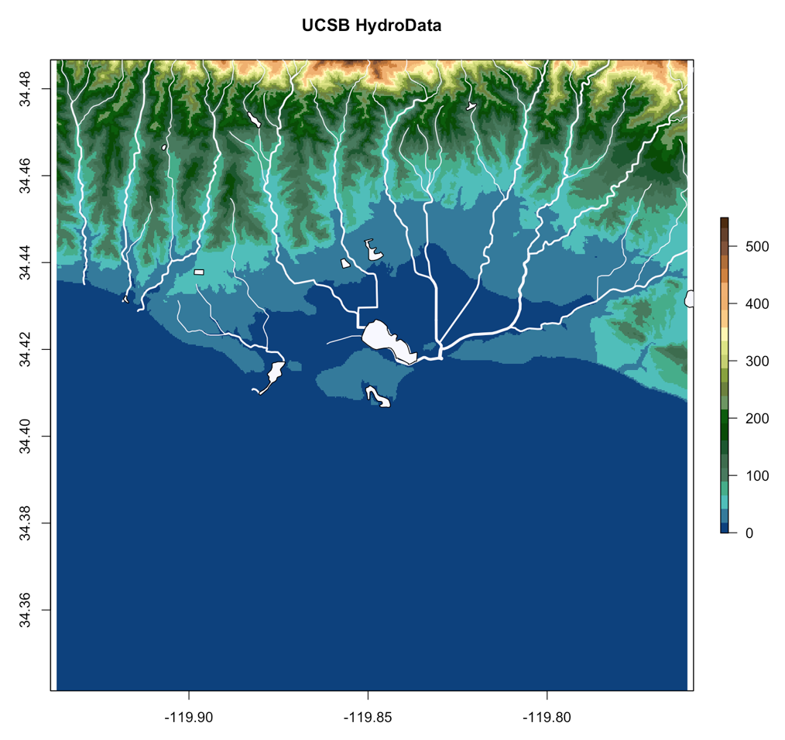

HydroData is designed to help (1) find, (2) get, (3) visualize and (4) format disparate earth systems data through a core language (R); a common geospatial reference; and unifying vocabulary built around querying data for an area of interest (AOI). The package supports access to 19 National/Global data sources.
All functions are dsigned to work with the AOI package and with the magrittr pipe operation %>%. This way HydroData calls can be directly chained to the area of interest:
myData = getAOI(clip = list("UCSB", 10, 10)) %>%
findNHD() %>%
findWaterbodies %>%
findNWIS %>%
findNED()str(myData,max.level = 2)
List of 5
$ AOI :Formal class 'SpatialPolygons' [package "sp"] with 4 slots
$ nhd :Formal class 'SpatialLinesDataFrame' [package "sp"] with 4 slots
$ waterbodies:Formal class 'SpatialPolygonsDataFrame' [package "sp"] with 5 slots
$ nwis :Formal class 'SpatialPointsDataFrame' [package "sp"] with 5 slots
$ NED :Formal class 'RasterLayer' [package "raster"] with 12 slots
- attr(*, "class")= chr "HydroData"
HydroData offer in-package tools for generating interactive visualizations of HydroData Spatial* objects
myData %>% explore()
The data can be ploted piecemeal:
raster::plot(myData$NED, col = col_elev, main = "UCSB HydroData")
sp::plot(myData$nhd, add =T, col = "ghostwhite", lwd = myData$nhd$streamorde)
sp::plot(myData$waterbodies, add =T, col = 'ghostwhite')

and for fun the NED file can be passed though the rayshaer package to generate a beautiful hillshade image
library(rayshader)
ned = myData$NED
ned = matrix(raster::extract(ned,raster::extent(ned),buffer=1000),
nrow=ncol(ned),ncol=nrow(ned))
ned %>% sphere_shade(texture = "imhof1") %>%
add_water(detect_water(ned), color="desert") %>%
add_shadow(ray_shade(ned)) %>%
add_shadow(ambient_shade(ned)) %>%
plot_map()

To download and get started with HydroData, install from GitHub using the devtools packages:
library(devtools)
install_github("mikejohnson51/HydroData")Links
- Browse source code at
https://github.com/mikejohnson51/HydroData - Report a bug at
https://github.com/mikejohnson51/HydroData/issues
Developers
- Mike Johnson
Author, maintainer